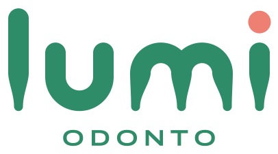
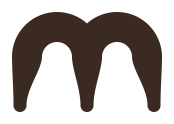

Lumi Odonto · versões03
Uma arcada
inteira.



lumi.odonto
Odontologia que acolhe.
Pode vir com medo.
Odontologia que acolhe.
Pode vir com medo.
o m sozinho vira o símbolo

É a primeira coisa que se vê, e já conta o que a marca é: o m é um molar. Duas cúspides em cima, três raízes embaixo.
Toda letra termina afinando, como raiz de dente. Menos o u: o u é o sorriso.



Para título que fala alto. Caixa-alta, apertado, com ponto final.
Para o texto do dia a dia. Sem jargão, frase curta.
Para o recado à mão, como o dentista escreve no cartão.

Fala como gente, explica antes de mexer e nunca dá bronca.
Evitar: “sorriso perfeito”, “procedimentos de excelência”, “agende já!!!”.